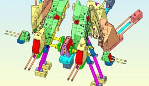
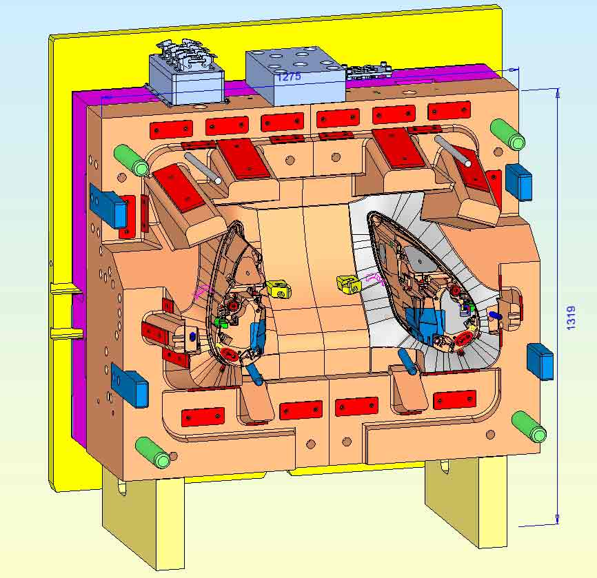
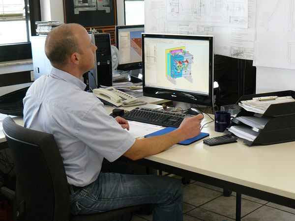
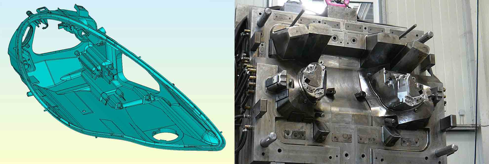

Cimatron erfüllt die Anforderungen des Großformenbaus
- Mit ca. 800 Mitarbeitern produziert das Coko-Werk in Deutschland, Polen und in der Türkei Kunststoffteile bis 17 kg für unterschiedlichste Industriezweige. Im Großwerkzeugbau im ostwestfälischen Bad Salzuflen beschäftigt Coko derzeit 50 Mitarbeiter.
- Im Jahr 2000 schaffte das Coko-Werk die ersten beiden Cimatron Arbeitsplätze für die Konstruktion seiner Spritzgießwerkzeuge und Elektroden an. Die Installation wurde seitdem kontinuierlich auf inzwischen acht Cimatron Arbeitsplätze erweitert.
- „Mit dem neuen Modul Deformation hat Cimatron (…) den Artikel für uns einfach und schnell bombiert, um so den zu erwartenden Verzug zu kompensieren. Manuell hätte das sicher drei bis vier Tage in Anspruch genommen (…). Das war in 15 Minuten erledigt.“
Offenes Volumen mit zahlreichen Funktionalitäten
Zeiteinsparungen von mehreren Tagen und enorme Kosteneinsparungen klingen utopisch. Im Werkzeugbau des Coko-Werks in Bad Salzuflen lässt sich das allerdings mit den Funktionalitäten der CAD-Lösung Cimatron Version 10 realisieren. So erleichtert beispielsweise speziell bei großen Bauteilen die 64-Bit-Version das Konstruieren und schafft zusätzliche Ressourcen.

Der Trend ist klar erkennbar, bei großen Bauteilen sind die 64-Bit-Systeme weiter auf dem Vormarsch. Werkzeuge lassen sich damit in der Konstruktion besser handeln, weil unter anderem vom Betriebssystem mehr Speicher adressiert werden kann.
Im Werkzeugbau des Coko-Werks stieß man in der Vergangenheit bei großen Werkzeugen sowohl bei der Hardware als auch bei der Software an Grenzen, weil sich der Einsatz als sehr rechenintensiv darstellte. In diesen Fällen behalf man sich bei Coko damit, die Düsen- und die Auswerferseite getrennt voneinander zu detaillieren und zu speichern. Bei großen Werkzeugen mit vielen Schiebern, oder wenn die Auswerfer- mit der Düsenseite abgeglichen werden musste, wurde es teilweise sehr schwierig. Deshalb war der Wunsch der Verantwortlichen an Cimatron, die Performance des Systems zu verbessern. Mittlerweile arbeitet man in Bad Salzuflen mit der 64-Bit-Version des Cimatron. Freilich sind jetzt auch der Arbeitsspeicher größer, der Prozessor schneller und die Grafikkarten leistungsfähiger aber vor allem die Anwendungssoftware selbst hat sich dahingehend in allen Bereichen weiter entwickelt.

Mit dem Modul Deformation den Verzug im Griff
Nun ist Leistung allein sicher nicht der Schlüssel zu mehr Produktivität. Meist stecken die Potenziale in den Details. Zumindest sieht das Sebastian Bröker, Konstruktion Coko-Werk, so: „Wir hatten erst vor kurzem ein Motorbauteil für einen LKW mit den Abmessungen 1.160 x 340 x 40 mm. Wegen des zu erwartenden Verzugs beim Spritzen wurde das Bauteil zunächst in einer Spritzgießsimulation gerechnet und die Ergebnisse mit den Maßen des Verzugs sowie die 3D-Artikeldaten an Cimatron weiter gegeben. Mit dem neuen Modul Deformation hat Cimatron dann den Artikel für uns einfach und schnell bombiert, um so den zu erwartenden Verzug zu kompensieren. Manuell hätte das sicher drei bis vier Tage in Anspruch genommen, so war es nur das Einstellen und rechnen lassen. Das war in 15 Minuten erledigt.“ Im konkreten Fall führte das aber nicht nur zu Zeiteinsparungen sondern auch zu einer enormen Kostenreduzierung und Entlastung der Fertigung, denn durch den Einsatz des Moduls Deformation kommt man schnell an das gewünschte Ergebnis und kann so ein bis zwei Korrekturschleifen einsparen.

Das Modul Deformation wurde speziell für die Kompensation von Verzug beim Spritzgießen entwickelt und wird mit der Version 10 voraussichtlich Ende des 3. Quartals 2011 verfügbar sein. Interessant ist der Einsatz dieser Lösung allerdings nicht nur beim Verzug von Kunststoff sondern auch bei der Kompensation der Rückfederung im Blechbereich.
Vollhybrides Arbeiten - Die Vorteile der Volumenkonstruktion in Verbindung mit der Flächenmodellierung
Ähnlich positive Erfahrungen mit Cimatron hat man bei Coko aber auch in anderen Projekten gemacht. So führten zum Beispiel bei einem Scheinwerfergehäuse für einen deutschen Hersteller von Luxussportwagen zahlreiche Funktionalitäten zu mehr Effizienz. Es ging dabei um eine sehr komplexe Form, mit vielen Rippen, Domen etc. Dazu Sebastian Bröker: „Ein großer Vorteil von Cimatron ist sicher, dass man hier durchgängig hybrid arbeiten kann, dass heißt, dass neben der Volumenfunktionalität auch ausgezeichnete Flächenfunktionen zur Verfügung stehen. Während zum Beispiel bei Kühlbohrungen optimalerweise im Volumen gearbeitet wird, schätzen wir vor allem bei den Artikeländerungen die Möglichkeit mit Flächen zu arbeiten.“ Das heißt, in der Version 10 können die Vorteile des volumenbasierten Arbeitens, wozu auch das neue Deformationsmodul zählt,ohne Verzicht auf bekannte Flächen-Funktionalitäten genutzt werden. Alle manuellen Eingriffsmöglichkeiten und das vollständig hybride Arbeiten stehen also weiterhin zur Verfügung.
Unabhängig von der Qualität des gelieferten Datensatzes
Bei Coko wurde man vor Jahren über QuickElectrode auf Cimatron aufmerksam. Inzwischen werden alle Elektroden der großen Werkzeuge über dieses Tool aufgebaut.

Mittlerweile verfügt man über drei Elektrodenlizenzen und fünf Konstruktionsarbeitsplätze mit verschiedenen Modulen wie Formtrennung oder MoldDesign, um einfach und schnell Auswerfer zu platzieren, Kühlbohrungen zu setzen usw. Hartmut Schöpp, verantwortlich für die Fertigungsplanung im Werkzeugbau beim Coko-Werk sieht aber noch weitere entscheidende Vorteile beim Einsatz von Cimatron: „Ein Hauptproblem sind für uns nach wie vor die Daten, die uns kundenseitig bereitgestellt werden. Häufig bekommen wir von unseren Kunden ein Bauteil mit defekten Flächen. Das heißt, es ist kein geschlossenes Volumen. Dadurch dass Cimatron mit offenen Volumen arbeitet, hat für uns die Qualität des Datensatzes nicht mehr so große Bedeutung, denn wir können trotzdem den Artikel einblenden, die Form aufbauen, es können Bohrungen gesetzt oder auch Volumen abgezogen werden. So besteht für uns nicht der Zwang den Artikel, zeitaufwändig zum geschlossenen Volumen abzuändern. Ein anderer Punkt ist, dass die Daten unserer Kunden meist nicht mit Cimatron erstellt werden. Wir müssen also mit unterschiedlichsten Fremddaten arbeiten. Cimatron reagiert hier sehr schnell mit neuen Schnittstellen-Versionen auf die anderen Systeme, so dass wir auch in dem Bereich kaum Probleme haben.“ Die hier beschriebenen Funktionalitäten sind bei Cimatron auf Grund der Nähe zum Werkzeug- und Formenbau kein „Beiwerk“ sondern Basis. Nach Auskunft der Verantwortlichen in Bad Salzuflen spürt man das auch in der Praxis. (Manfred Lerch)


Kurz gefasst
Mit 500 Mitarbeitern am Standort Bad Salzuflen, 250 in Polen und 50 in der Türkei gehört das Coko-Werk zu den dynamisch wachsenden Unternehmen der Branche. Mit ca. 100 Spritzgussmaschinen in der Summe und einer maximalen Zuhaltung von 2.500 t werden Kunststoffteile bis 17kg gefertigt.
Der Großwerkzeugbau beschäftigt inklusive Konstruktion und Auszubildende derzeit 50 Mitarbeiter, die sich ausschließlich mit Serienwerkzeugen für Kunststoffartikel, Vorserienwerkzeuge oder Prototypenwerkzeuge, bis 16 Tonnen beschäftigen.
Zum Kundenkreis vom Coko-Werk zählen unter anderem die Automobil- und Zulieferindustrie, der Bereich Haushaltsgeräte sowie Computerund Heiztechnik. Als Systemlieferant bietet das Coko-Werk so Komplettlösungen aus einer Hand.
Weitere Informationen: www.coko-werk.de
"Häufig bekommen wir von unseren Kunden ein Bauteil mit defekten Flächen. (...) Dadurch dass Cimatron mit offenen Volumen arbeitet (...) besteht für uns nicht der Zwang den Artikel, zeitaufwändig zum geschlossenen Volumen abzuändern."